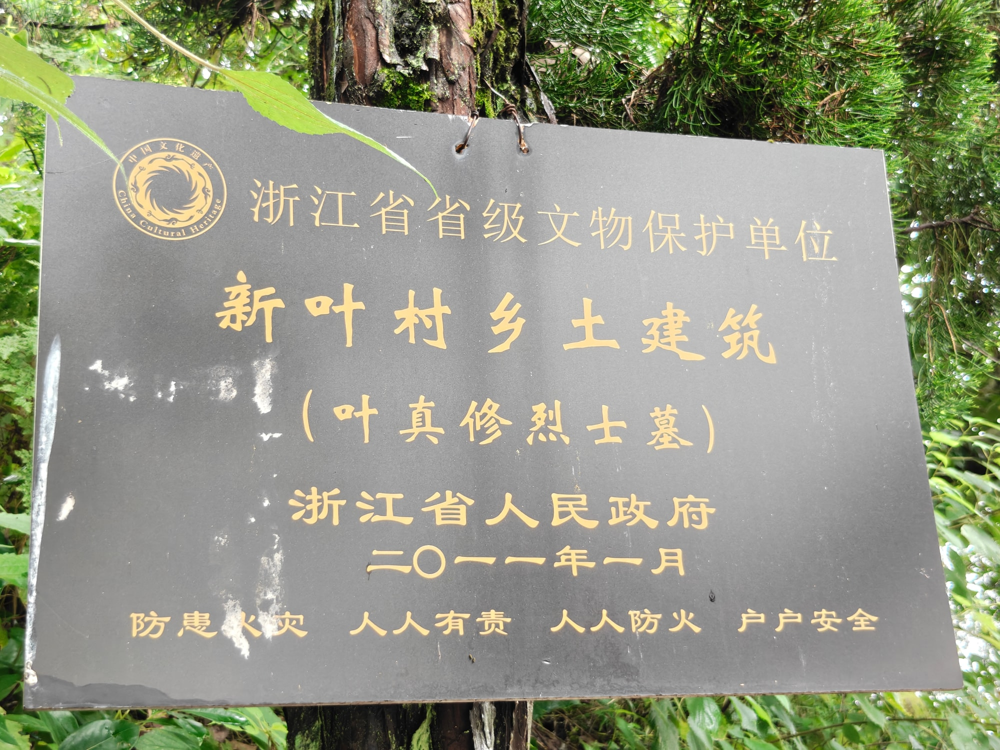
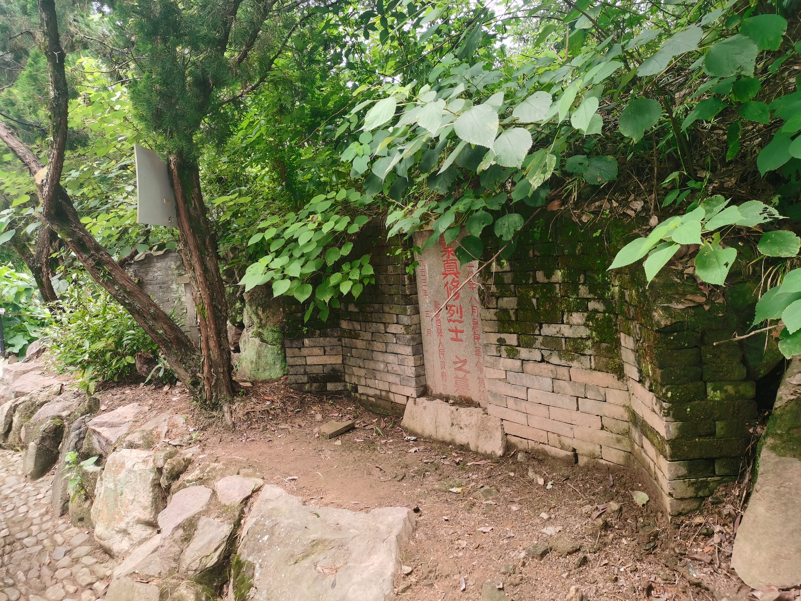

省保烈士墓（纪念性文物）
故乡为烈士留下的纪念地叶真修烈士墓
叶真修烈士墓位于新叶自然村南面，是省级文物保护单位“新叶村乡土建筑”的组成部分。这里纪念着从新叶村走出的革命烈士叶真修。
01
新叶走出的革命烈士

叶真修生于1895年，家谱记载为叶正修。1928年，他参加农民革命时被俘牺牲；1953年，寿昌县政府追认他为革命烈士。
02
村南的纪念空间

烈士墓设置在新叶自然村南面。墓体与周围纪念环境共同构成凭吊空间，使叶真修的革命经历在故乡拥有一处可以到访和追思的实体地点。